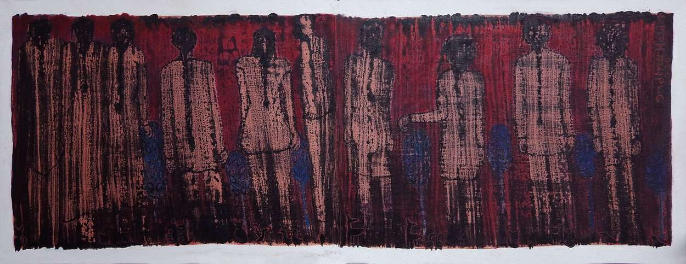
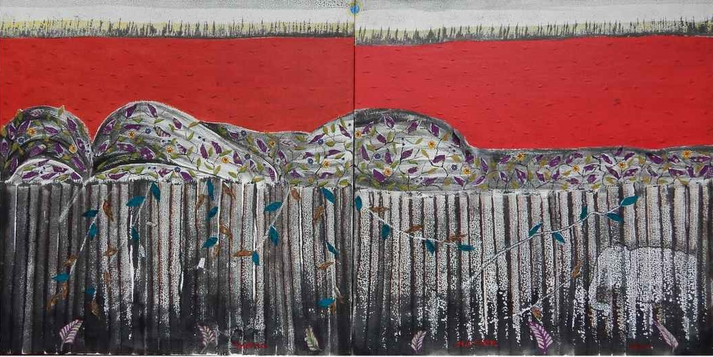
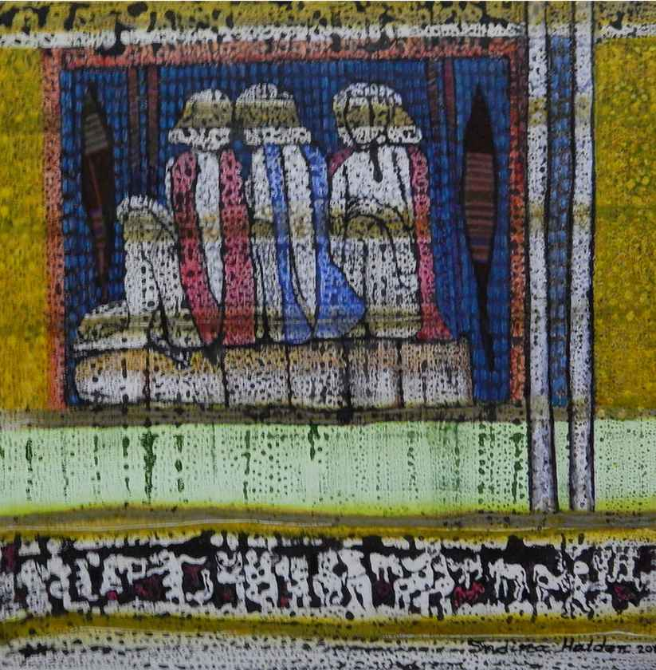
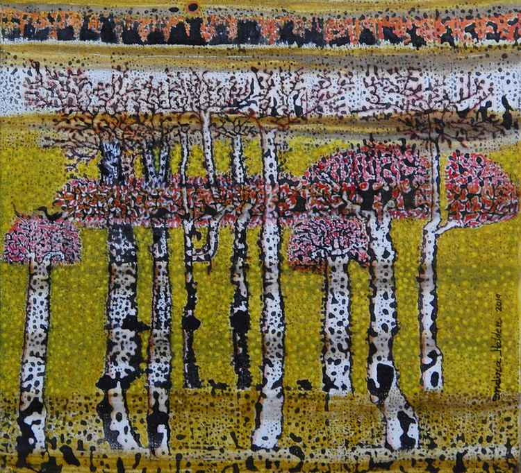

Artist :
Indira Halder
The world of Indira Halder is crowded with men and women who are depicted in muted colours. Her painting
reminds one of the forgotten art forms of the marginalised tribal lands. By drawing from these art forms
Haldar is able to bring these otherwise forgotten art into the public eye. She uses subdued colours and
white is often a primary colour. The subjects of her paintings are ordinary moments like a group of women
gossiping. At times she is inspired by the natural landscape which abounds in animals and flowers.
But haldar's paintings show a knack for presenting the normal in a peculiar way which makes her viewers
question their own version of reality.
THEY ARE I

THEY ARE I, Indira Halder
Medium - oil on Canvas
Dimensions - 36" X 54"
In the daily humdrum of life, we as individuals carry on with our routine lives devoid of
any sense of adventure. As each person goes about this monotonous existence, he is
also a part of the larger horde of people who go about their lives as ants. In this crowd
is it possible to delineate any particular individual? To stop and unfold their stories? Is
this what life is all about? This composition of Indira Halder raises these questions to
her viewers. The canvas is full of men apparently moving forward but is this truly
progression? The artist has painted these men in blurred lines. Their faces look blank
and there are no distinct markings to make anyone of them memorable. Black lines fill
the bodies of these persons who are all dresses similarly and painted yellow. While
yellow is a shade that would recall sunshine on a bright day the choice of shade by
Halder evokes a sickly pallor which manifests into a larger commentary on the illness
that lies beneath the veneer of monotony of human existence.
THEY ARE II

THEY ARE II , Indira Halder
Medium - Acrylic on Canvas
Dimensions - 12" X 32"
Set against a deep red background; this painting depicts a group of women with
their backs turned towards the viewers. There is no scope for progression in this
world which looks backwards towards orthodoxy rather than appreciating traditional
values. The women look similar with hair tied neatly into plaits. Hair which is left
loose has been used to depict a sense of freedom across ages so this depiction of
plaited hair evokes a sense of conformity and submission. This restrictive pattern is
further emphasized by the rigid postures of the women. This composition draws the
attention of the viewers to the uniformity in the presentation of these women who
have no marked individual traits. This canvas is a symbol of a nameless existence
where individuals are trapped with no hope for escape. Yet amidst all this
repetitiveness, the artist has used traces of blue which calls to mind the flow of a
river. It is vital that in all this stagnancy, there is space for subversion and
movement.
BORDER

BORDER , Indira Halder
Medium - Acrylic and collage on canvas
Dimensions - 28" X 56"
This painting presents an undulating landscape which is covered with rich vegetation of
creepers and colourful leaves. It is interesting that instead of using just green, the artist
has used varied colours to paint the leaves. There is also a presence of scattered yellow
flowers on the hills. Together these creepers with its leaves call to mind the prayer flags
which is often found fluttering in the mountains of the Himalayan belt which is supposed
to help the wind carry prayers to heaven. The most prominent colour in this painting is
the use of red colour which symbolises the presence of blood and therefore life. There is
a wall towards the bottom of the canvas whose purpose is to confine. This is a man
made structure as seen in the use of vertical wood planks. But can nature ever be
imprisoned? Even as the wall marks a border, an elephant makes its presence known
while the creepers have managed to climb and cover the
walls with its colourful leaves.
WORSHIP OF NATURE

WORSHIP OF NATURE , Indira Halder
Medium - Acrylic on canvas
Dimensions - 18" X 36"
This composition presents two images, one where a group of women are gathered
holding flower garlands and the other image presents a landscape with rocks and
plants which has received the offering of flower garlands. The artist has used stark
images mostly in black and white. The use of multiple colours is restricted to the
depiction of flowers alone. Flowers are a symbol of nature’s beauty and it also
reflects happiness and joy. Flowers are used as offering to present in any form of
worship. Hence it is vital that these flowers are offered not to any particular God
rather it is offered to the landscape made of rocks and plants. Divine power can be
felt most amidst beauty of creation and this canvas is an assertion of that thought. At
the same time by depicting women and nature side by side the artist highlights
women and environment as an embodiment of nurturing. While the lack of colour
hints at a darker latent destructive force which lies with both women as well as
nature.
GOSSIPING IN LEISURE MOMENT

GOSSIPING IN LEISURE MOMENT , Indira Halder
Medium - Acrylic on canvas
Dimensions - 20" X 20"
Inspired by the primitive sculptures found as
remnant of by gone civilisations, this painting is
centred around three women who are seated on a
platform. The artist has used clean lines to make
the outlines of these female figures but beyond that
we can only see shadow like markings. The only
presence on colour is the distinct 'duppattas' of red
and blue which give these figures a distinct
feminity. Together the positioning of these three
figures mirrors a famous image of Gandhi's three
monkeys who represent the idea of avoidance of all
forms of evil. Hence, it is perhaps ironical then that
this painting captures a moment of idle gossip
among women on a lazy afternoon. This gives a
painting a satiric overtone. On the edge of the
painting is a border which has a tribal motif which is
made up of crude stick figures of human as well as
animals together with two spear like arrows.
Together this painting represents a merging of the
contemporary with the primitive and the real with
the surreal.
NATURE IN SPRING

NATURE IN SPRING , Indira Halder
Medium - Acrylic on canvas
Dimensions - 20" X 20"
This painting captures a moment in nature when
everything comes alive. It depicts a group of trees set
against a background of a lake with trees standing
further away. The choice of colours used to represent
landscape is interesting as the artist uses the muted
colours of autumn. Yet this autumnal colours also
gives a warm overtone to the painting. The trees are
white dotted with black and they stand tall with minimal
branches. The way they stand, bare with nothing much
left paint a picture of their journeys and the storms that
they have faced. In face of all trials and tribulations,
they remain standing. Hence, it is a moment of joy to
see that they are topped with a cluster of flowers and
leaves and colours alike. In a landscape where
everything is muted the burst of these colours
captures the burst of life in the season of spring. The
gentle and earthy colours of yellow and brown give
way to pink, red and orange. The blossoming of these
colours give a sense of hope and capture the cycle of
renewal which is a vital part of nature.